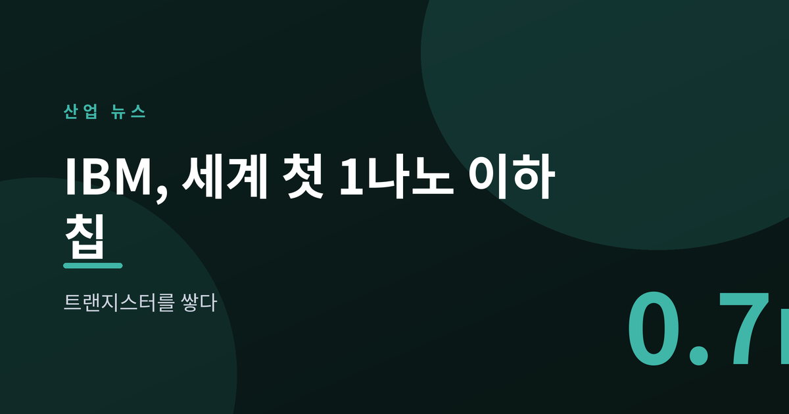
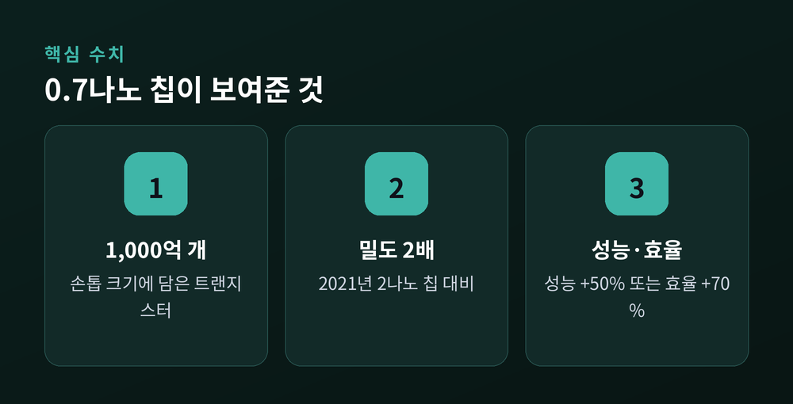
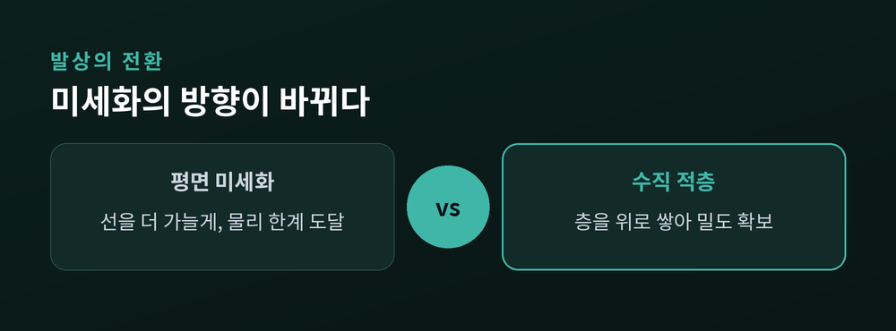
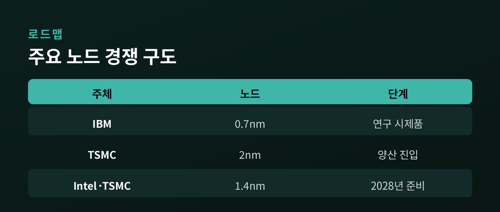

트랜지스터를 눕히지 않고 쌓다

이번 글에서는 IBM이 6월 25일 공개한 '0.7나노미터' 칩 기술을 정리해 보겠습니다. 세계 첫 1나노 이하라는 수식보다 중요한 것은 '수직으로 쌓는다'는 발상의 전환입니다. 무슨 일인지, 왜 중요한지, 앞으로 어떻게 될지 차분히 짚어보겠습니다.
IBM이 VLSI 2026 학회에서 세계 최초의 '서브 1나노미터' 반도체 기술을 발표했습니다. 미국 뉴욕 올버니 연구소에서 만든 연구 시제품입니다.
핵심 숫자는 이렇습니다. 손톱만 한 실리콘 조각에 트랜지스터를 약 1,000억 개 담았습니다. 2021년 공개한 2나노 칩보다 밀도가 약 두 배입니다.
성능도 함께 올렸습니다. 2나노 노드와 견주어 성능은 최대 50% 높거나, 같은 성능이라면 에너지 효율이 70% 좋아집니다.
다만 아직 실험실 단계입니다. 상용 양산까지는 시간이 더 필요합니다.

그동안 반도체는 트랜지스터를 더 작게 그려 넣는 방식으로 발전했습니다. 평면 위에서 선을 가늘게 눕히는 경쟁이었습니다.
문제는 이 방식이 물리적 한계에 다다랐다는 점입니다. 선을 무한정 가늘게 만들 수는 없습니다.
IBM의 답은 방향을 바꾸는 것이었습니다. 옆으로 줄이는 대신 위로 쌓았습니다. 이 구조에 '나노스택'이라는 이름을 붙였습니다.
원리는 이렇습니다. 아주 얇은 절연막을 사이에 두고 트랜지스터 층을 두 겹으로 접합해 세로로 포갭니다. 같은 바닥 면적에 더 많은 소자를 넣는 셈입니다.
예전엔 넓이를 두고 다퉜습니다. 지금은 높이를 활용합니다.

여기서 오해를 하나 풀어야 합니다. 0.7나노는 어떤 부품의 실제 크기가 아닙니다.
IBM도 인정합니다. 7옹스트롬이라는 이름은 배선의 폭이나 자로 잴 수 있는 단일 치수가 아니라, 밀도와 성능의 '세대'를 가리키는 표시입니다.
사실 이는 업계 공통의 관행입니다. TSMC나 삼성의 3나노, 2나노도 실제 물리 치수와는 다릅니다. 그래서 이번 발표를 두고 노드 이름을 어떻게 붙일지 논쟁이 다시 불붙었습니다.
이름에 현혹되지 않는 편이 좋습니다. 본질은 숫자가 아니라 '수직으로 쌓았다'는 구조에 있습니다.

배경에는 AI가 있습니다. 거대 언어모델 학습에는 막대한 연산과 전력이 듭니다.
IBM은 이 기술로 만든 AI 가속기가 약 7,000 TOPS의 성능을 낼 수 있다고 봅니다. 오늘날 약 1,500 TOPS의 네 배가 넘는 수치입니다. 지금 석 달 걸리는 대형 모델 학습을 2주로 줄일 수 있다는 전망도 내놨습니다.
다만 신중히 볼 대목이 있습니다. 이 수치들은 아직 전망이자 추정입니다. 양산으로 가려면 수율과 비용이라는 현실의 벽을 넘어야 합니다.
TSMC와 인텔은 2028년께 1.4나노 양산을 준비 중입니다. IBM의 성과는 그보다 앞선 세대를 겨냥한 연구입니다. 방향은 제시했으되, 도착은 아직입니다.
이 글은 특정 기업이나 종목에 대한 투자 권유가 아닙니다. 판단과 책임은 본인에게 있습니다.
정리하면 이렇습니다. IBM은 반도체를 더 작게 만드는 대신, 더 높이 쌓는 길을 택했습니다. 무어의 법칙이 멈춰선 자리에서 새 방향을 연 셈입니다.
— 한계에 부딪힌 기술은 사라지지 않고, 방향을 바꿉니다.
옆으로 갈 길이 막혔다면, 위로 오르면 됩니다.